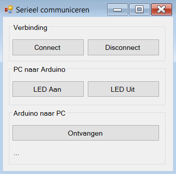

Een programma op je computer zet een led op je Arduino aan en uit, en vraagt er een sensorwaarde aan op. Niet via de seriële monitor, maar via een venster met knoppen dat je zelf kan aanpassen.
De seriële monitor is uiteindelijk ook maar een programma dat de COM-poort openzet. Er is niets dat je tegenhoudt om dat zelf te doen. In deze oefening krijg je een klein C#-programma dat precies dat doet, en schrijf je de Arduino-kant erbij.
TinkerCAD heeft geen COM-poort, dus een programma op je pc kan er niet mee praten. Voor deze ene oefening heb je dus een echte Arduino aan een echte USB-kabel nodig. Het C#-programma draait op Windows.
Er is maar één Arduino nodig, en er komt geen enkele draad op pin 0 of pin 1. De verbinding met je pc loopt gewoon over de USB-kabel, en die hangt intern al aan Rx en Tx.
| Arduino | Waarvoor |
|---|---|
| pin 3 | Een led, via een weerstand van 220 Ω |
| A0 | Een sensor naar keuze: een potentiometer, een LDR of een TMP36 |
Download het project via de referentiepagina van dit labo, onder Downloads, en pak het uit. Je kan het openen in Visual Studio, maar er staat ook een gebouwde versie klaar in bin\Debug als je alleen wil zien wat het doet.

Bekijk de code in Form1.cs. Ze is korter dan je verwacht. De kern is dit:
serialPort.PortName = "COMX"; // veranderen naar jouw poortnummer
serialPort.BaudRate = 9600; // moet overeenkomen met je Serial.begin()
serialPort.Open();
serialPort.WriteLine("LED:1"); // zenden
string antwoord = serialPort.ReadLine(); // ontvangenDat zijn precies dezelfde begrippen als op de Arduino: een poort openen, een baudrate afspreken, lijnen zenden en lijnen lezen. Het programma spreekt ook dezelfde taal als je twee Arduino's in de vorige oefeningen, namelijk SLEUTEL:WAARDE.
| Knop | Stuurt | Verwacht terug |
|---|---|---|
| led Aan | led:1 |
niets |
| led Uit | led:0 |
niets |
| Ontvangen | SENSOR:? |
één lijn, bijvoorbeeld SENSOR:512 |
Staat de seriële monitor van de Arduino IDE open, dan is de COM-poort bezet en krijgt het C#-programma ze niet open. Sluit de monitor voor je op Connect klikt. En sluit het C#-programma weer af voor je een nieuwe sketch uploadt, want ook het uploaden heeft die poort nodig.
Dat staat in de Arduino IDE bij Tools en dan Port. Vul dat nummer in de plaats van COMX in.
Schrijf de sketch die aan de andere kant van die lijn zit:
led:1 gaat de led aan, bij led:0 gaat ze uit.SENSOR:? lees je je sensor uit en stuur je het antwoord terug in dezelfde vorm, dus SENSOR: gevolgd door de waarde.Het uitpluizen van de boodschap is exact hetzelfde als in de twee vorige oefeningen. Dat is ook het punt: het maakt je Arduino niet uit of er een tweede Arduino aan de lijn hangt of een pc.
Wil je verder gaan: breid het uit met een tweede led, of laat de Arduino uit zichzelf elke seconde een SENSOR:-boodschap sturen in plaats van te wachten tot er gevraagd wordt. In het C#-programma kan je daarvoor een Timer gebruiken.
Sla je oefening op.
Overloop volgende checklist om je oefening zelf te evalueren:
Vergelijk deze sketch eens met die van oefening 6. Het geraamte is identiek: lijn lezen, trimmen, splitsen op de dubbelepunt, en dan een if per sleutel. Alleen wat er in die if-blokken gebeurt is anders.
Het antwoord op SENSOR:? staat bewust op één lijn: een print() voor de sleutel en een println() voor de waarde, die de lijn afsluit. Aan de pc-kant staat een ReadLine(), en die wacht tot er een volledig afgesloten lijn is. Zet je daar per ongeluk twee println()'s, dan leest de pc alleen het eerste stuk.
const int ledPin = 3;
const int sensorPin = A0;
void setup()
{
pinMode(ledPin, OUTPUT);
Serial.begin(9600);
}
void loop()
{
if (Serial.available() > 0)
{
String regel = Serial.readStringUntil('\n');
regel.trim();
int scheiding = regel.indexOf(':');
if (scheiding > 0)
{
String sleutel = regel.substring(0, scheiding);
String waarde = regel.substring(scheiding + 1);
if (sleutel == "LED")
{
if (waarde == "1")
{
digitalWrite(ledPin, HIGH);
}
else
{
digitalWrite(ledPin, LOW);
}
}
else if (sleutel == "SENSOR")
{
Serial.print("SENSOR:");
Serial.println(analogRead(sensorPin)); // in een keer, dus een volledige lijn
}
}
}
}serialPort.DtrEnable = false; houdt tegen dat je Arduino opnieuw opstart op het moment dat je verbinding maakt. Standaard doet hij dat wel, want dat is precies hoe het uploaden werkt. Zonder die regel begint je sketch dus telkens opnieuw als je op Connect klikt.
serialPort.NewLine = "\r\n"; zorgt ervoor dat C# een lijn op dezelfde manier afsluit als Serial.println() dat doet. Vergeet je dat, dan blijft er een onzichtbare \r aan het antwoord plakken en staat er rommel op je scherm.
serialPort.ReadTimeout = 2000; is je vangnet. Antwoordt je Arduino niet, bijvoorbeeld omdat je sketch de sleutel SENSOR nog niet kent, dan blijft ReadLine() anders eindeloos wachten en hangt het venster vast.